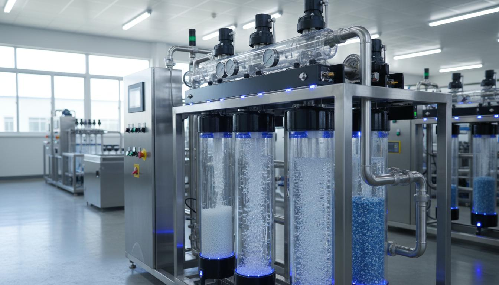
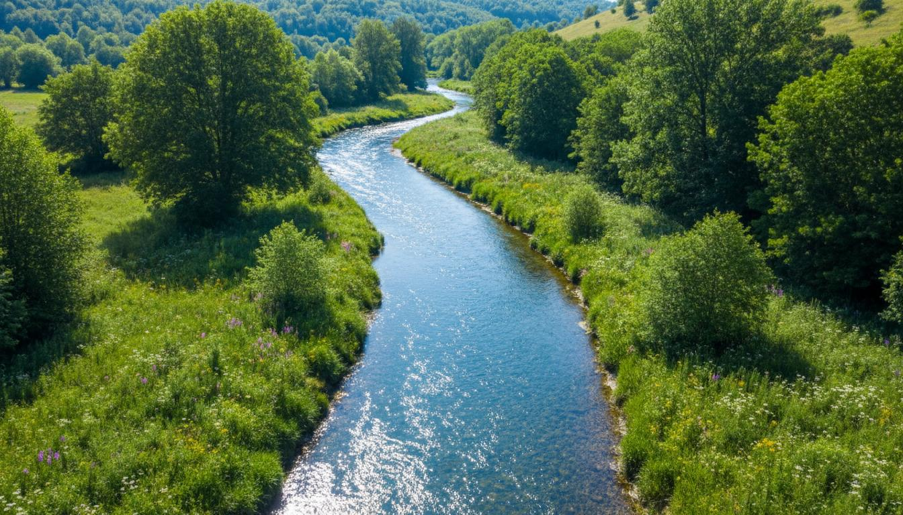
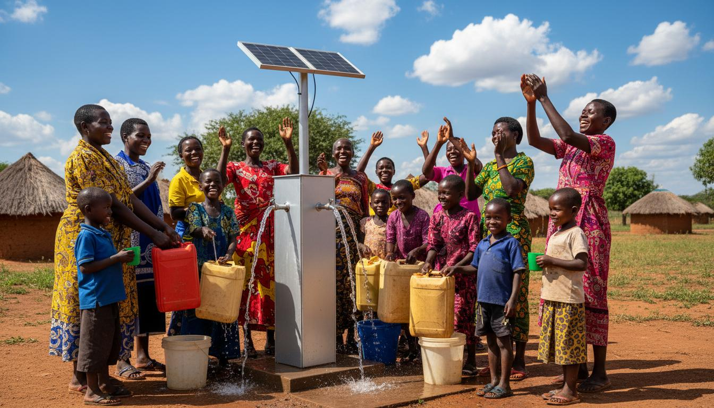

Water Purification Systems
We design, install, and maintain advanced purification stations using multi-stage filtration, UV sterilisation, and reverse osmosis.
Includes: Installation, maintenance, water quality testing.
Comprehensive water solutions designed to meet the unique needs of communities across South Africa.
From cutting-edge purification technology to grassroots education.

We design, install, and maintain advanced purification stations using multi-stage filtration, UV sterilisation, and reverse osmosis.
Includes: Installation, maintenance, water quality testing.

Our programmes teach schools and communities about water conservation, hygiene, and sustainable management.
Includes: Workshops, training materials, school programmes.

We work directly with communities to assess needs, deploy resources, and build local capacity for lasting impact.
Includes: Needs assessment, volunteer training, ongoing support.
Beyond our core services, we offer specialised programmes.
Rapid deployment of mobile purification units during droughts, floods, or infrastructure failures within 24 hours.
Comprehensive testing for bacteria, heavy metals, and chemical contaminants with detailed reports.
Partner with businesses to fulfil CSI mandates through meaningful water projects with full impact reporting.
Work alongside municipalities to supplement public water infrastructure in resource-stretched areas.
Vocational programme training young people as certified water technicians and community educators.
Continuous research into new water technologies from ceramic filters to atmospheric water generators.
We currently operate across four provinces in South Africa.
Contact us to discuss how we can bring clean water solutions to your area.
Make an Enquiry